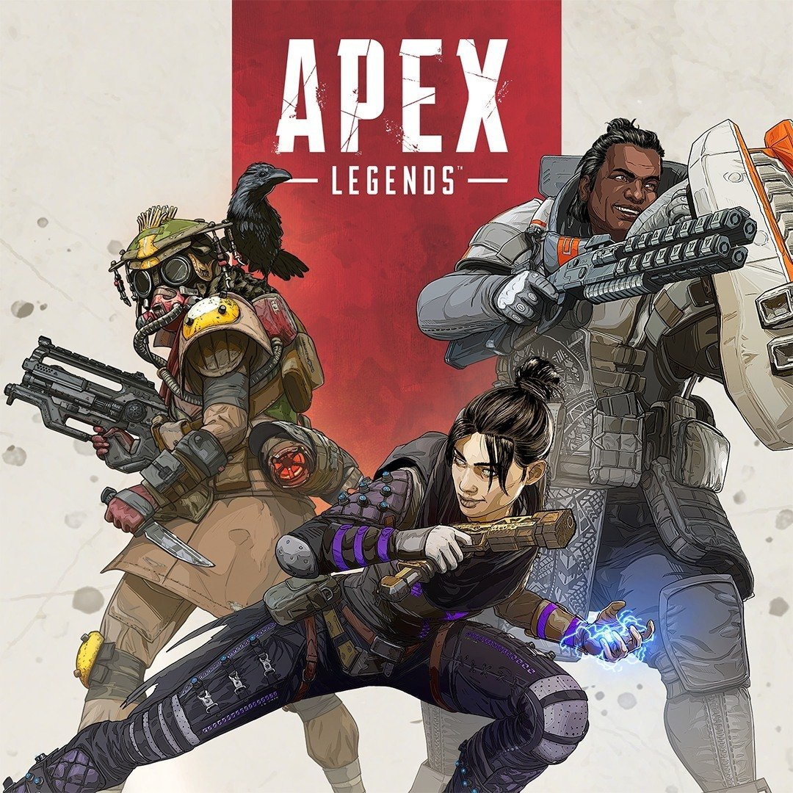

Ik ben Yiming, een student van ROC Nijmegen Softwere developer
Ik kom van China, dit is mijn 5e jaar in Nederland. Mijn hobby is basketbal, gamen en muziek enz.
Studie
Ik studeer software developer aan het ROC Nijmegen en dit is mijn eerste jaar in de opleiding. Ik heb twee jaar taalleerervaring in Nederland, één jaar mbo niveau 1 en twee jaar mbo niveau 2. Dit is mijn 6e jaar in Nederland, voordat ik naar Nederland kwam heb ik in China op de hoge middelbare school gezeten.
Pontem college
2 jaar
Assisten bouwen
1 jaar
ICT support medewerker
2 jaar
Software development
bezig
H
O
B
B
Y
Ik speel graag basketbal en ik kijk naar de NBA. Mijn favoriete team is de Golden State Warriors. Maar ik heb al heel lang geen basketbal meer gespeeld. Basketbal lijkt niet zo'n populaire sport te zijn in Nederland.
Ik luister graag naar muziek. Ik luister veel naar rap en het heeft een groove die me heel gelukkig maakt. Mijn favoriete Chinese rapper is GAI, mijn favoriete buitenlandse rapper is Kanye West. Weiyuan Story is mijn favoriete rap van GAI.

Ik speel ook graag computerspelletjes. Spelletjes zijn de makkelijkste manier om jezelf te vermaken voor alledaags tijdverdrijf. Ik gebruik steam. Het spel dat ik veel speel is APEX legend. Ik heb onlangs het masterlevel bereikt.